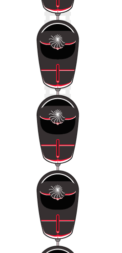

 image: Chris P.“The library club united us.”
The regular beat of “Still D.R.E” was coming out of the pizzeria. I have never been the greatest fan of this song, but it was still something unique for us — us kids from the Women’s Bazaar. Of course, at the top place of our chart was Gumeni Glavi’s song “Izviniavai Skapa” (Rubber Heads, Excuse me my dear). The mere thought of Shamara beating his girlfriend provoked my admiration over his arrogance and at the same time I felt disgust at the barbarous act of violence. Later I found out that such a combination of feelings is just impossible. The reason for liking the song was not just the fact that the girls did not pay any attention to us. Except for the girls in my class, my friends and me did not know other representatives of the opposite sex. Actually, we did not think we are ugly but our training suits covered with dust and our long combed-back home-cut hair revealed boyish poverty.
The vents of the pizzeria took the smell of ham, mushrooms and spaghetti right into the library club. No one of us had ever been in the pizzeria. Gigo stuffed his hand in the pocket, had a deep sigh and said in his perky manner “Lets go to the comps!”
Me and Niki looked at him as if he bitterly cursed us. There was a reason behind this, of course. Throughout the whole week I was studying hard doing math and reading literature. I was not spending anything, so I can go to the neighborhood computer club in the weekend and play some Counter Strike. The library club on Tsar Samuil Street was our meeting point although we didn’t know how it was called. All we did before was playing hide and seek, football, and basketball. Until computer clubs started opening everywhere. This changed our everyday life completely. We rarely gathered at the library club. We could not breathe without spending our pocket money to see how the Diablo characters pass another level. Yet, we were united. As we had no money to go to computer cafés, we continued to play football in the library club yard and to listen the same Bulgarian rap music. We had no mobile phones but we did not need them – they bring only problems. The library club united us, and despite the bad and neglected field, and the worn out clothes, I felt happy. There was nothing more pleasant for me than to get together with these guys at night, to play Chipicao, and to tell each other stories that no-one of the others believed for a reason.
One evening my parents told me that our apartment had been sought, and that we were moving out. I could not stop crying.
referenced works
- The open-air market “Georgi Kirkov” better known by Sofia’s residents as the “Women’s Market”, is one f Sofia’s main commercial centers. It became such since 1978 before Bulgaria’s liberation from the Ottoman Yoke. It was previously known as “Wheat Market” and “Horse market”. The market was created to meet the needs of Sofia’s residents of fresh produce and to give the opportunity to the workers from the nearby villages to sell their products. The market is located within the administrative boundaries of downtown Sofia, limited by the boulevards “Patriarch Evtimii”, “Hristo Botev”, “Slivnitsa” and “Vasil Levski”. The market itself is on the “Stephan Stambolov” boulevard in close proximity to the Lion Bridge, the “Saints Saints Cyril and Metodii” church, the Synagogue, the Central Market Hall, the west wall of the ancient “Serdika” and many other sites, which could rightfully qualified as “tourist attractions”. ↩
location information
- Name: 85 Tzar Samuil Street
- Address: 85 Tzar Samuil Street
- Time of story: Afternoon
- Latitude: 42.679154
- Longitude: 23.304062
- Map: Google Maps

Write for Us!
We’re looking for short narratives describing pivotal moments of elation, confusion, absurdity, love or grief — or anything in between — inseparably tied to a specific place in Sofia.
Sofia:
Or receive updates by email
Addresses only used for the occational hitotoki mailing. Will not be sold to the crazy people on tram N22.
A list of all available RSS feeds is on the about page
commentary